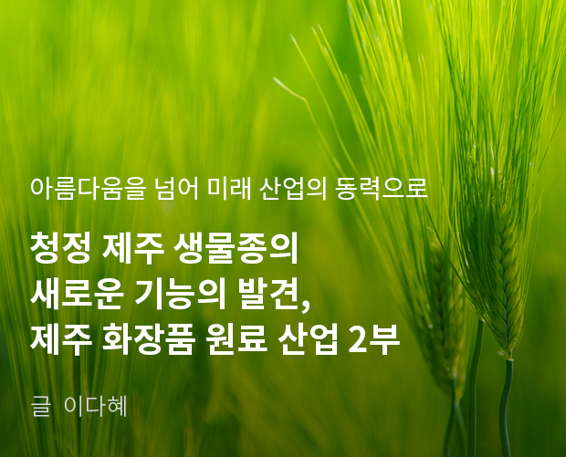

기획취재콘텐츠
- Home
- 제주라이프
- 기획취재콘텐츠
제주 화장품 원료 산업 2부새로운 글


제주 화장품 산업의 성장
2018년 제주지역 화장품 산업 실태 조사 보고서에 따르면 제주 도내에 소재를 둔 화장품 기업은 100여 개 기업으로 추정된다. 이 중 제주도에 본사를 둔 업체는 80%에 달한다. 제주도 화장품 업체의 매출액 및 수출액은 지속적 상승세를 보인다. 특히 수출액의 성장세가 뚜렷하다. 산업 규모가 확대되며 화장품 산업 관련 종사자 수도 꾸준히 증가하고 있다. 제주도 내 화장품 업체 총종사자 수는 2017년 602명, 2018년 653명, 2019년 855명으로 2019년에는 전년 대비 30% 이상 종사자 수가 증가했다.
기업 총 매출액 및 제주도 내 매출액 (base:전체기업, 단위: 백만원)
| 구분 | 제주도 내 총 매출액 현황 | 기업 총 매출액 현황 |
|---|---|---|
| 2019년 | 122,903(+4,942) | 598,245(+8,580) |
| 2018년 | 114,381(+8,284) | 589,665(+14,897) |
| 2017년 | 106,097(+6,875) | 574,768(-66,264) |
| 2016년 | 99,222 | 641,032 |
기업 총 수출액 및 제주도 내 수출액 (base:전체기업, 단위: 천불)
| 구분 | 제주도 내 총 수출액 현황 | 기업 총 수출액 현황 |
|---|---|---|
| 2019년 | 13,961(+1,196) | 67,144(+4,942) |
| 2018년 | 12,765(+1,294) | 63,202(+17,685) |
| 2017년 | 11,471(+1,122) | 44,517(+10,056) |
| 2016년 | 10,349 | 34,461 |
제주도 내 화장품 업체 총 종사자 수(base:전체기업, 단위:명)
2017년 602명, 2018년 653명(+51명), 2019년 855명(+202명), 2019년 추가 채용 예정(+65명)

제주테크노파크는 화장품 산업 성장과 함께 원료 시장도 성장했을 것으로 추정한다. 화장품 제조에 필요한 원재료 및 중간 재료의 제주 조달 여부를 묻는 조사에서 제주에서 재료를 조달한다고 응답한 비율이 74.4%로 청정 제주의 이미지만 활용하는 것이 아닌 제주 원료가 적극적으로 소비되는 것을 확인할 수 있다. 제주에 본사를 두거나 지사를 설립한 회사가 제주도를 사업 입지로 선정한 이유에 대한 질문(중복응답)에 화장품 브랜드로 제주 이미지와 시너지를 내고자 함이 51.2%로 가장 많은 응답을 얻었으며, 원재료 조달에 유리하다는 답변이 41.9%로 2위를 차지했다.
제주도 입지 사유 (base:전체기업, 단위:%)
- 설립자 연고지 40.7%
- 자금조달 유리 0%
- 지자체의 육성의지 23.3%
- 원재료 조달 41.9%
- 전문인력 확보 0%
- 제주 이미지 51.2%
- 기업지원 서비스 9.3%
- 기타 3.5%
화장품 원료 및 중간재료 제주 조달 여부 (base:전체기업, 단위 %)
제주에서 조달함 74.4%, 타 지역에서 조달함 25.6%, 수입하고 있음 0%

이처럼, 화장품 산업에서 탄탄하게 다져진 제주의 청정 이미지와 고기능의 다양한 청정 원료 수급처로서 제주가 가진 화장품 원료 산업과 화장품 산업의 가능성은 무궁무진하다. 화장품 산업은 이미지 추구와 브랜드 가치에 따라 가치가 극대화되는 고부가가치 산업이며 화장품 산업 중 화장품 원료 산업은 기술집약적 산업으로 다양한 생물종의 연구와 개발에 선두를 가져갈 경우 식품 및 화장품 원료 기술 선진지로서 더 큰 부가가치를 만들 수 있다고 관계자는 말한다.
제주산 화장품 원료 및 화장품 산업 활성화를 위한 움직임
제주특별자치도는 지역전략사업으로 건강·뷰티생물산업(향장품, 식품, 해양바이오 등)을 육성해왔다. 제주바이오산업의 견인차 역할을 하는 제주테크노파크는 건강·뷰티 생물산업 육성과 바이오사이언스 파크 조성사업 등을 추진하고 있다. 지난 2004년에는 국내 최초로 지자체 화장품 공장을 설립하고 CGMP인증(cosmetic GMP:2005,12월)을 받아 제주 소재 화장품 기업에 기초 화장품, 기능성 화장품, 팩, 샴푸 등 300만여 개의 향장품 생산을 지원했다.
JTP는 2007년 6월에는 화장품 생산 공장을 준공해 운영 중이다. 지난 2019년 11월에는 청정자원 화장품 원료와 산업화 인프라 구축 및 화장품 원료 소재 산업 육성을 위한 ‘화장품원료산업화협의체’를 구성하고 본격적인 활동에 들어갔다. 화장품원료산업화협의체에는 전국 화장품과 화장품 원료 소재 관련 기업, 대학, 연구기관, 공공기관 등이 참여해 제주산 원료 제품 개발을 위한 소재 정보와 제품화 컨설팅 지원, 제주 화장품 원료 인증 컨설팅 지원, 전문인력 양성 및 기술과 정보 교류, 화장품 원료 생산 지원 등 화장품 원료 개발과 산업화에 필요한 지원을 제공한다.
또한, 제주산 화장품 원료 사용 확대와 제주산 화장품 브랜드 이미지 제고를 위해 제주화장품 인증제도(JCC, Jeju Cosmetic Cert)를 운용한다. 제주화장품인증은 제주산 화장품 원료 5~10% 이상을 함유하고 제주도에서 생산한 제품임을 제주도지사가 증명해주는 공식인증제도다. 이니스프리와 LG생활건강 등 대기업 제품부터 제주도에 본사를 둔 중소기업 브랜드 제품까지 총 32개 기업의 150여 개 제품이 제주화장품 인증을 받았다.
화장품 원료 산업, 제주 미래 먹거리 산업으로 부상
화장품 원료 산업은 제주의 미래 먹거리 산업으로 도약 중이다. 화장품 원료 연구 개발 및 실증 사업으로 화장품 원료 산업은 물론 바이오산업 선진지로 도약을 꾀하고 있다. 또한, 제주 대표 산업인 관광 산업과의 연계도 가능하다. 이니스프리는 화장품 브랜드와 로컬 콘텐츠를 결합해 지역 관광 산업의 활성화에 기여한 바 있다. 서광다원과 오설록티뮤지엄은 제주 여행의 필수 코스로 손꼽힌다. K-뷰티에 대한 인기와 제주산 원료와 제주 이미지를 브랜드 스토리로 앞세운 화장품 라인의 성공이 맞물려 해외 관광객의 이목을 끌었고, K-뷰티 여행지로 제주가 더욱 주목받게 된 것. 또한, 제주 동백마을과 비자마을, 카멜리아 힐, 가파도 등 제주의 아름다운 마을과 섬이 새롭게 재조명되기도 했다.
“제주의 우수한 화장품 원료에 대한 관심과 한국 화장품 브랜드의 해외 시장에서 인기를 바탕으로 중국 등 해외 OEM 업체에서 제주산 원료를 확인하기 위해 견학을 오는 등 원료 산업의 파급력은 점차 증가하고 있습니다. 바이오 기술 역량을 강화하고 다양한 생물종이 자생하는 장점을 활용해 화장품 원료를 기술 집약 산업으로 성장시킬 경우 그 잠재력은 충분히 클 것으로 보입니다.” (제주테크노파크 김봉석 화장품산업 팀장)
제주에는 발견되지 않은 청정 원료가 곳곳에 살아 숨 쉬고 있다. 바다와 육상에서 자생하는 다양한 생물종, 제주의 지형적 특성을 바탕으로 성장한 제주 고유 생물종 등은 계속 연구되고 발견될 예정이다. 제주에서 화장품 원료 산업이 미래 먹거리 산업으로 크게 주목받는 이유다.
이전글